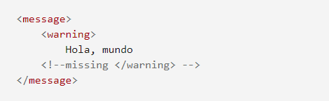

XML es un lenguaje de marcado similar a HTML. Significa Extensible Markup Language (Lenguaje de Marcado Extensible) y es una especificación de W3C como lenguaje de marcado de propósito general. Esto significa que, a diferencia de otros lenguajes de marcado, XML no está predefinido, por lo que debes definir tus propias etiquetas. El propósito principal del lenguaje es compartir datos a través de diferentes sistemas, como Internet.
Hay muchos lenguajes basados en XML; Algunos ejemplos son XHTML, MathML, SVG, XUL, XBL, RSS, y RDF. También puedes crear uno propio.
XML "Correcto" (válido y bien formado)
Para que un documento XML sea correcto, debe ser un documento bien formado, cumpliendo todas las reglas de sintaxis de XML, y válidas, acorde a las reglas de un lenguaje específico. Un ejemplo de un documento que no está bien formado es uno que tiene una etiqueta de apertura y no tiene una de cierre, ni se cierra en sí misma.
Ejemplo
En el ejemplo siguiente, vemos un documento en el que una etiqueta que no se cierra a sí misma, no tiene etiqueta de cierre.

Ahora veamos una versión correcta del mismo documento:
Para ser válido, un documento XML necesita cumplir ciertas reglas de semántica que son generalmente definidas en un esquema XML o en una Definición de Tipo de Documento (en-US) (DTD). Un documento que contiene una etiqueta no definida es inválido. Por ejemplo, si nunca definimos la etiqueta "warning", el documento anterior no sería válido
Bibliografia:
(2015). Recuperado el 28/09/2021, de Tópicos avanzados de bases de datos: https://slideplayer.es/slide/3421979/
Documenacion SQL. (2019). Obtenido de https://docs.microsoft.com/es-es/sql/xquery/xquery-language-reference-sql-server?view=sql-server-ver15